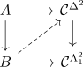
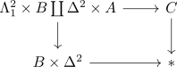

infinity category and trivial fibration of inner hom
Proposition
Let $\mathcal{C}$ be a simplicial set and
\begin{align*}
\iota^{*}: \mathcal{C}^{\Delta^2} \rightarrow \mathcal{C}^{\Lambda_1^2}
\end{align*}
the morphism induced by the horn inclusion $\iota^*: \Lambda_1^2 \rightarrow \Delta^2$.
TFAE:
- $\mathcal{C}$ is a quasicategory
- $\iota^*$ is a trivial fibration
Proof
1) $\implies$ 2)
\begin{align*}
\Lambda_1^2 \rightarrow \Delta^2
\end{align*}
2) $\implies$ 1)
Let

then
